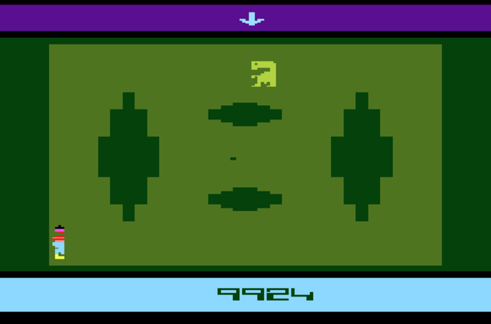

>
Sale al mercado el que es considerado el peor videojuego de la historia: E.T. The Extra-Terrestrial para
Atari 2600. El juego salió a la venta y resultó
ser pésimo en todos los sentidos. Con gráficos tremendamente simples, una jugabilidad
imposible de entender y con un fallo que provocaba que en determinada parte del juego,
E.T. cayera en un hoyo de tierra y no pudiese salir.
<
>
Se crea Electronic Arts bajo el nombre de Amazin' Software, con una inversión inicial de 2 millones de dólares. La compañía apostó por arriesgarse y fue la pionera a la hora de ofrecer
sus productos directamente a los minoristas.
Por otro lado también se crea Ocean Software que fue fundada en Manchester durante este año.
Años adelante Ocean sería la compañía europea más importante durante mucho tiempo.
<
>
Nace Q*Bert, desarrollado por Atari. Un arcade de plataformas con gráficos en dos dimensiones que jugaba con la profundidad en pantalla. El objetivo era cambiar el color de todos los cubos de una pirámide haciendo que el protagonista saltase encima de cada cubo mientras evitaba obstáculos y enemigos.
<